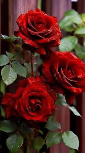
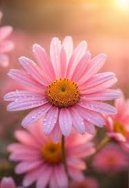

A flower is the reproductive part of a flowering plant. It is usually colorful and fragrant, attracting insects and birds that help with pollination. Flowers produce seeds, which grow into new plants. Common parts of a flower include the petals, sepals, stamens, and pistil. Flowers also add beauty to gardens and nature.
| S.N | Flower Name | color |
|---|---|---|
| 1 | Rose | Red |
| 2 | Sunflower | Yellow |
| 3 | Daisy | Pink |

The rose is one of the most popular and beautiful flowering plants in the world. It is known for its attractive petals, pleasant fragrance, and variety of colors. Roses symbolize love, beauty, friendship, and admiration. They grow best in sunny locations with well-drained soil and require regular watering and care. Roses bloom in many colors such as red, pink, white, yellow, and orange, making them a favorite choice for gardens, bouquets, and special occasions.

The daisy is a cheerful flowering plant known for its white petals and yellow center. It symbolizes innocence, purity, happiness, and new beginnings in many cultures. Usually has white, pink, or yellow petals Grows well in sunny places Easy to cultivate in gardens and pots Blooms mainly in spring and summer.
.jpeg)
Sunflower is a flowering plant famous for its large, bright yellow flower head and its valuable edible seeds. It is one of the world's most important oilseed crops and is widely cultivated for food, oil production, animal feed, and ornamental purposes.